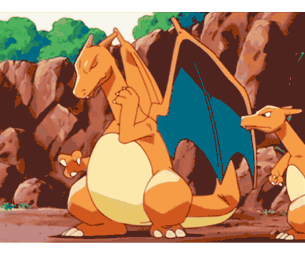

Pokémon (ポケモン Pokemon) es una franquicia de medios que originalmente comenzó como un videojuego RPG, pero debido a su popularidad ha logrado expandirse a otros medios de entretenimiento como series de televisión, películas, juegos de cartas, ropa, entre otros, convirtiéndose en una marca que es reconocida en el mercado mundial. Las ventas de videojuegos hasta el 1 de diciembre de 2006 habían alcanzado una cantidad de 340 millones de ejemplares (incluyendo la venta de la versión Pikachu de la consola Nintendo 64), logrando ocupar el segundo lugar de las sagas de videojuegos más vendidos de Nintendo. La franquicia celebró su décimo aniversario el 27 de febrero de 2006.

La saga de videojuegos es desarrollada por la compañía programadora de software japonesa Game Freak, con personajes creados por Satoshi Tajiri para la empresa de juguetes Creatures Inc., y a su vez distribuida por Nintendo. La misión en estos juegos es capturar y entrenar a los pokémon (criaturas cuya denominación da nombre al juego), que hasta la fecha alcanzan el número de 1025 (1172 incluyendo formas regionales y mecánicas exclusivas procedentes de otras entregas). La posibilidad de intercambiarlos le hizo conseguir una popularidad que se plasmó en un éxito de ventas y la consiguiente aparición de una serie animada, películas y diverso merchandising como peluches, juguetes y cartas.
Página web creada por: David Bolívar - 2024